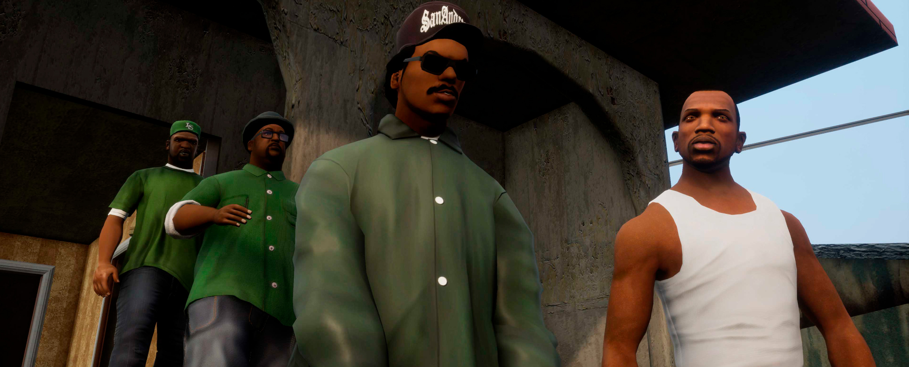

عنوان المثال.
تشير الدراسات الإحصائية حسب الجمعية الأمريكية للغات بأن الإقبال على العربية زاد %126 في الولايات المتحدة الأمريكية وحدها بين عامي 2002 و2009م.

CJ começou a se envolver mais ativamente com o mundo do crime durante a sua adolescência, quando seu irmão Sweet se tornou líder da gangue Grove Street Families, e o introduziu junto de Brian às ilegalidades.
Ryder é um membro do alto escalão da Grove Street Families, que mais tarde se juntou aos Ballas, Vagos e C.R.A.S.H.. Ryder é um usuário de drogas, algo reconhecido por Sweet e Carl, e ele geralmente pode ser visto em busca de sua "água", que é na verdade é PCP.
Big Smoke era um membro de alto escalão da Grove Street Families que depois desertou para os Ballas, e realizou negociações clandestinas com os Los Santos Vagos e a Máfia Russa, eventualmente se tornando o vigarista mais poderoso no submundo do crime de Los Santos.
Los Santos é a cidade natal de Carl Johnson (CJ), que retorna da vida em Liberty City após seu irmão lhe informar da morte de sua mãe. O jogo começa assim, e a história gira em torno de uma longa guerra de gangues entre a gangue de CJ, os Grove Street Families, e os Ballas. Gangues rivais hispânicas como os Varrios Los Aztecas e os Los Santos Vagos também estão presenteEm 1992, os policiais Frank Tempenny e Eddie Pulaski do C.R.A.S.H. (Community Resources Against Street Hoodlums, "Recursos da comunidade contra desordeiros de rua") foram condenados por homicídio e atentado ao pudor. Antes, Pulaski havia sido assassinado por CJ após Tenpenny e ele concluirem que não havia mais uso para CJ. Em uma audiência, Tempenny foi solto depois que seu advogado o livrou de todas as acusações. A cidade toda, revoltada com o fato de Tenpenny se livrar de crimes tão horrorosos, explodiu em revoltas. Durante esse período caótico, Carl Johnson matou o traficante de cocaína e antigo amigo Big Smoke. Após isso, CJ perseguiu Tenpenny, que morreu quando seu caminhão dos bombeiros caiu de um viaduto. Quando a notícia correu a cidade, ela voltou a tranquilidade.
San Fierro é a menor área metropolitana de San Andreas (Ainda que a mais urbanizada), e está situada na península na parte ocidental do estado. No sul da cidade, encontra-se o Monte Chiliad e a cidade de Angel Pine, em Whetstone. Ao norte da cidade, através de uma recriação da famosa ponte Golden Gate (Gant Bridge), fica a pequena cidade de Bayside, e ao noroeste da cidade, encontra-se o município de Tierra Robada. San Fierro é uma cidade de tamanho moderado, com a bela baía de San Fierro ao norte e o Panopticon ao leste. A cidade é conectada a Los Santos e Las Venturas por rodovias e ferrovias, além do transportes aéreos. Há um clube de campo dentro de San Fierro. O bairro de Queens, com diversas bandeiras coloridas espalhadas, que provavelmente é baseado no Castro District, em San Francisco, que é o lar de uma população gay. San Fierro é também a casa do time de futebol "San Fierro 69ers", um duplo sentido referente tanto ao "San Francisco 49ers" quanto ao "69" (Posição sexual). Além disso, em uma referência grosseira ao sexo anal, a equipe de beisebol da cidade, o "San Fierro Packers", é patrocinado por ninguém menos que Fierro Fudge.
تشير الدراسات الإحصائية حسب الجمعية الأمريكية للغات بأن الإقبال على العربية زاد %126 في الولايات المتحدة الأمريكية وحدها بين عامي 2002 و2009م.